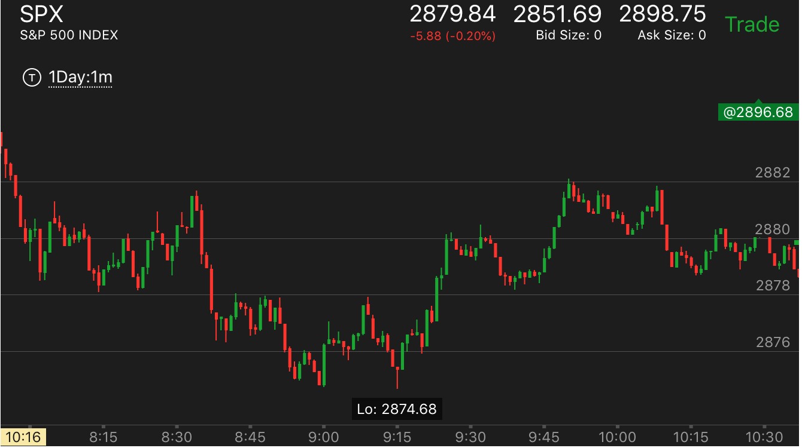
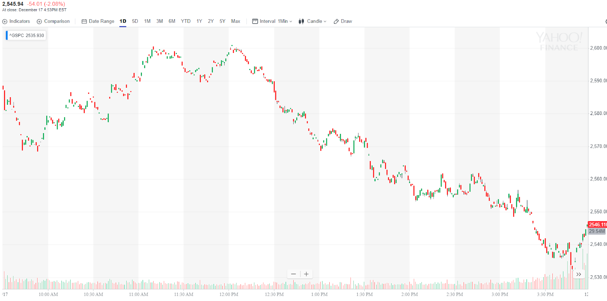
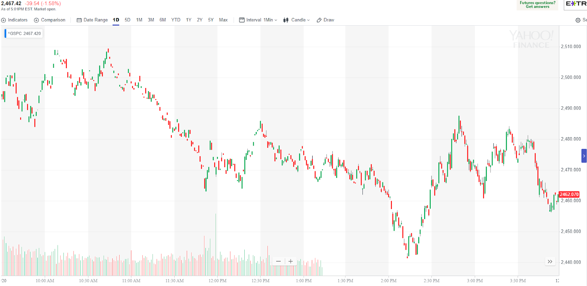

快速回填的双底或者双顶走势
- 出现了一个底部后，大盘开始反转，然后走出了一个两段走势，在阻力点回来。回来的速度很快。超过了前面两段走势。这样的走势一定会再次冲高，而且创新高。
双顶走势也是如此。
- 这个走势可以预先放好一个单子，在双底/双顶点。它常常速度很快，不到一分钟。但是如果单子很久没有执行，那么应该取消。要考虑时间的因素。只有快速的双底/双顶
才是真的。

图示：
1. 9:00出现了小的双底，然后反弹。反弹出现了两段上涨。在2878这个阻力点下来。它下来的速度很快。9：15回到了原来的低点。下跌的时间比上涨的时间短。然后大涨。
2. 9:46出现了大涨，它很快就下来了。然后在2880这个支撑点反弹。很快回到了2882.然后大跌。它反弹的速度超过了下跌的速度。

图示：12：00双顶速度比下跌的速度要快。说明这个双顶可以维持。会下跌。

图示：10：45的双顶，从底部很快的冲顶，这样也算比较快速。虽然它在比较早到达了底部。